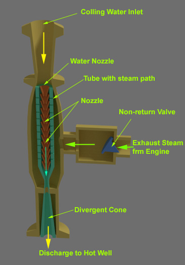

Counter Flow Low Level Jet Condenser
Parallel Flow Low Level Jet Condenser
High Level or Barometric Jet Condenser
Ejector Condenser
There are mainly three types of jet condensers.
1) Low level condenser.
2) High level condenser.
3) Ejector condenser.
Low Level Condenser
Here condenser chamber is placed at low elevation and overall height of the unit is low enough so that the condenser may be directly placed beneath the steam turbine, pump or pumps are required to extract the cooling water condensate and air from the condenser.
Low level jet condensers are of two types, 1) Counter flow and 2) parallel flow jet condenser.
Let discuss this jet condenser one by one.
Counter Flow Low Level Jet Condenser
In this type of steam condenser, the exhaust steam enters from lower part of condenser chamber and cooling water enters from upper parts of that chamber. The steam goes up inside the chamber whereas cooling water falls down from top, through steam. The condenser chamber is generally provided with more than one water trays perforated with holes to break up the water in small jets. The process is very fast. The condensed steam along with cooling water comes down through a vertical pipe to extraction pump. This centrifugal type extraction pump push the water to hot well. If required some of water from the hot well can be taken as steam boiler feed water and rest water flows to cooling pond. Boiler feed water is taken from hot well by means of boiler feed pump whereas, surplus water flows by gravity to the cooling pond.
A small capacity air pump is required at the top of the condensed tank, to extract air and uncondensed vapour.
The air pump, required for jet condenser is of small capacity for two main reasons.
1) It has to handle air and vapour alone.
2) It has to handle with small volume of air and vapour since the volume of air and vapour is reduced due to their cooling while rising through the steam of condensing water.
In this type of steam condenser, there is no need of extra pump for lifting cooling water from cooling pond to condenser chamber, as the water lifted itself by vacuum created in the condenser due to condensation of exhaust steam.
Low Level Jet Condenser
Although in some cases a pump is used to push the water to condenser.
Parallel Flow Low Level Jet Condenser
Basic design of parallel flow low level jet condenser is similar to the counter flow low level jet condenser. In this jet condenser, both cooling water and exhaust steam enter to the condenser chamber from the top. Heat exhausting takes place during falling of water through the steam. The cooling water, condensed steam along with wet air are collected from the bottom of the condenser by means of single pump. This pump is known as wet water pump. There is no need of extra dry air pump at the top of the condenser. As a single pump has to deal with condensate, air and water vapour, the capacity of producing vacuum is limited in parallel flow low level jet condenser. Similar to the counter jet technique, there is no need of extra pump to lift cooling water from source or cooling pond to condenser as it is alone by vacuum created in the condenser due to condensation of exhaust steam.
High Level or Barometric Jet Condenser
If a long pipe over 10 m, is closed at top end, filled with water, open at bottom and bottom is immersed in water, then atmospheric pressure would hold the water up in the pipe to a height of 10 m at sea level. On the basis of this principle, high level or Barometric jet condenser is designed. The figure below shows a high level jet condenser.
High Level or Barometric Jet Condenser
In this arrangement, the water out let pipe from the condenser bottom comes straight vertically to the hot well which is placed at the ground level. Cooling water is fed to the condenser chamber by means of pump. The cooling water enters from the side near to the top of the condenser chamber. The exhaust steam enters from the side near to the bottom of the condenser. This is basically a counter flow jet condenser. Here, the steams travels upwards inside the condenser whereas the water jets falls from top. The condensates and cooling water comes to the hot-well through vertical tail pipe due to gravitational force. There is no need of extraction pump. The air, uncondensed steam are removed from the chamber by using a dry air pump at the top of the condenser. Here, the capacity and size of dry air pump is quite small as it has only to deal with air, and uncondensed steam, and it has not to handle with cooling water and condensed steam.
Ejector Condenser

In this type of condenser, the momentum of falling water is utilized to extract or ejects air from condensates. The condenser chamber consists of a central vertical tube in which there is a string of many cones or converging nozzles. The exhaust steam enters from side way of the cylindrical condenser chamber. The central tube is provided with number of wholes or steam ports. The cooling water falls on the top converging nozzle at high speed. This speed is attained by the falling water because the water falls from 2 to 6 m height. This water flowing down through the converging nozzles one by one. The steam enters into the nozzles vide steam port. As this steam comes into contact with cooling water, it is condensed and creates partial vacuum. Due to this vacuum more and more steam enters into the vertical tubes through the steams ports and gets condensed and results further vacuum. The mixture of cooling water, condensed steam, uncondensed steam and wet air comes down to the bottom divergent nozzle as shown in the figure beside.
In the diverging nozzles, the kinetic energy is partly transformed into pressure energy so that condensates and air will be discharged into the hot well against the pressure of the atmosphere. Ejector condenser is usually fitted with a non-return valve in exhaust steam inlet as shown to prevent a sudden backward rush of water into the turbine exhaust pipe in case of sudden failure of water supply to the condenser.
An ejector condenser require more water than other jet water condenser. The cost is low size is small. It is simple and reliable but only suitable for small power generation unit.
 by
by